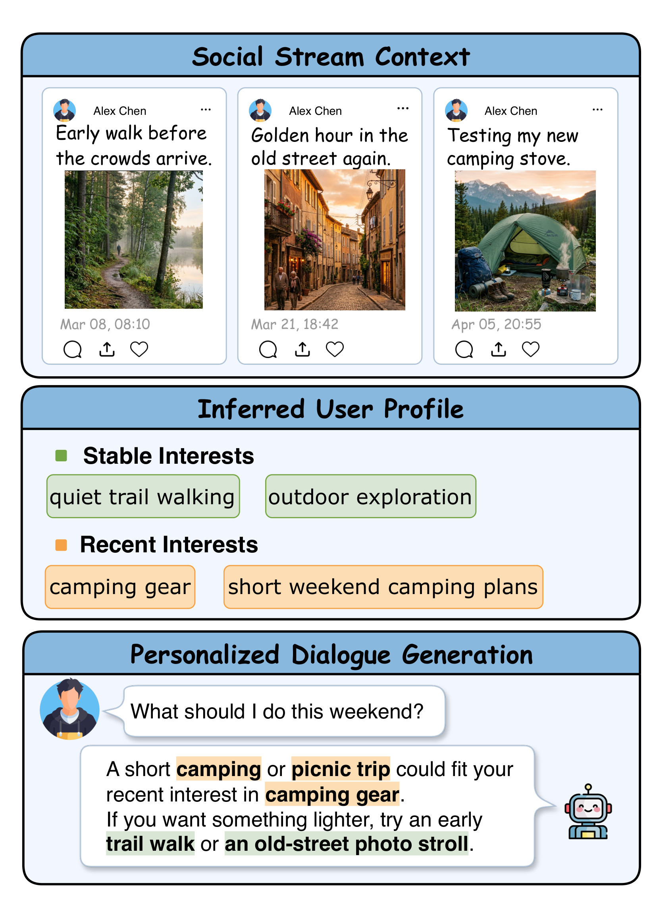
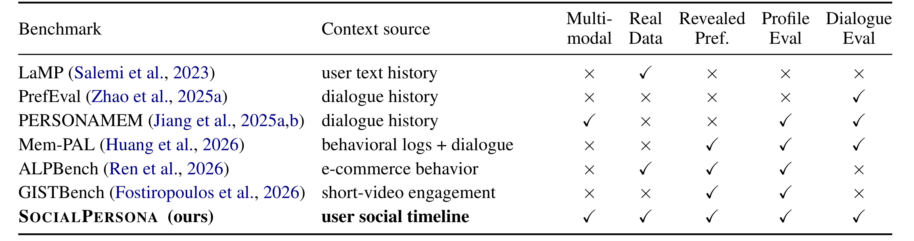
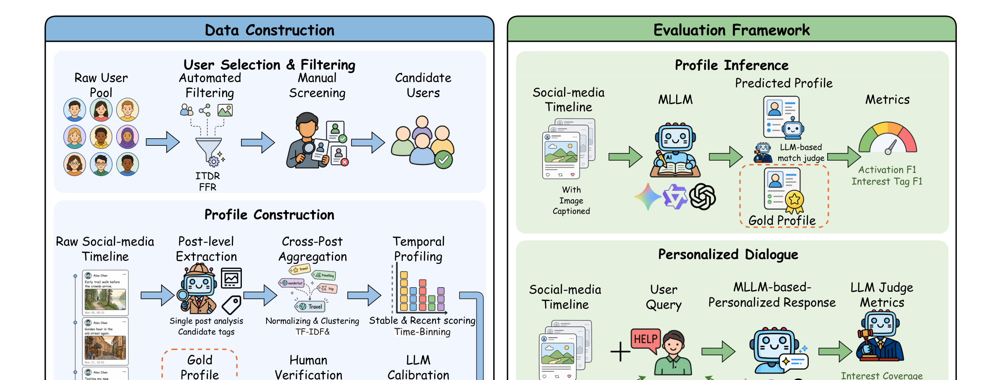
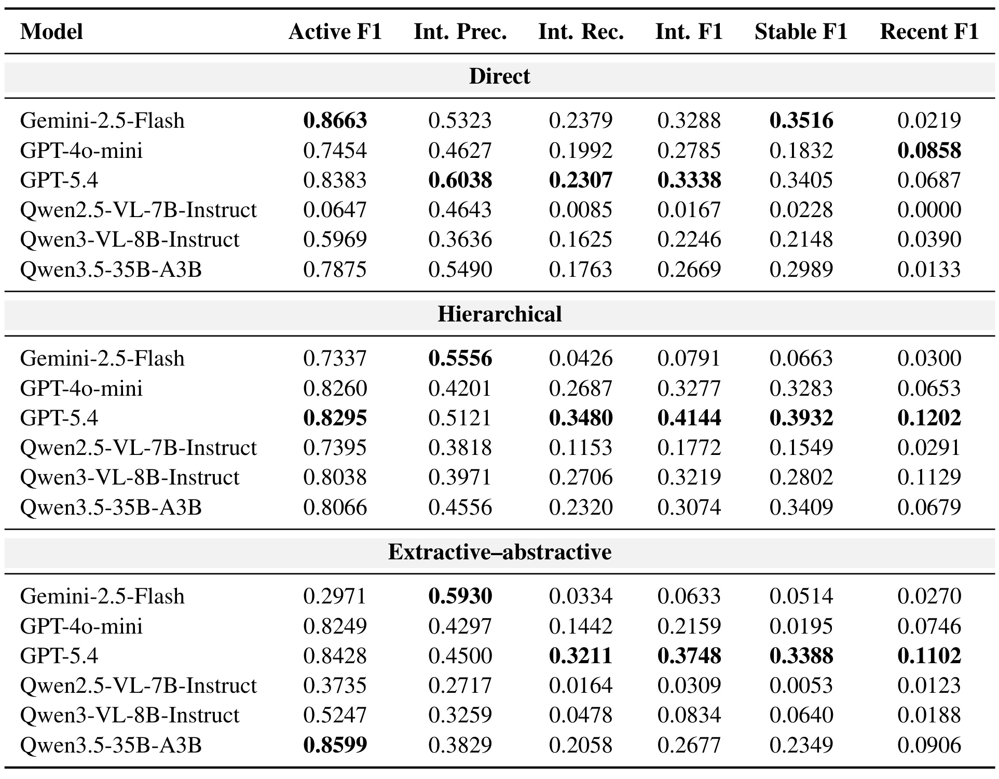
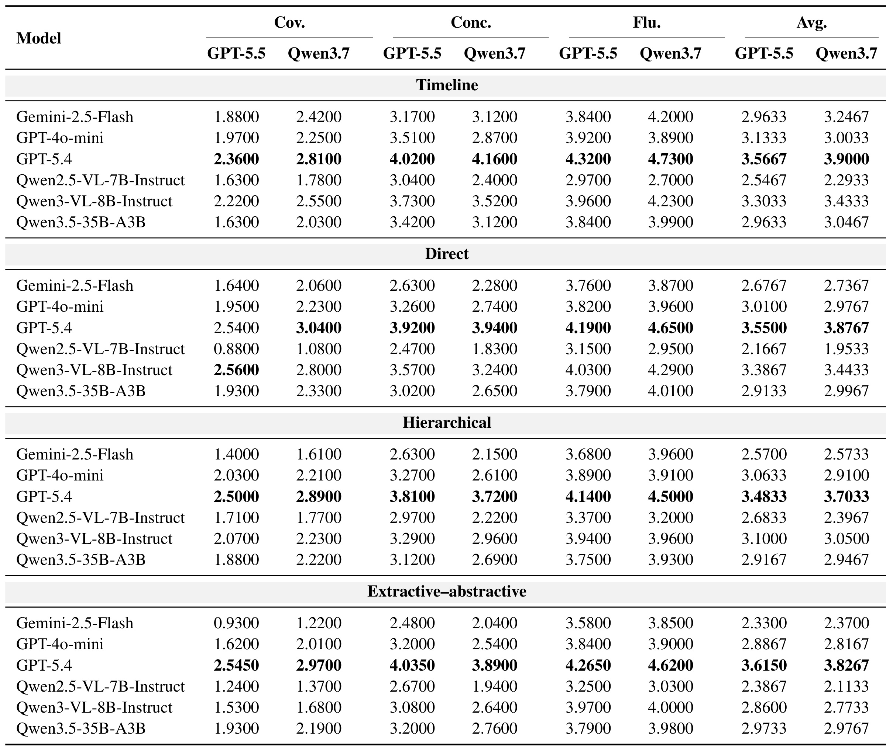
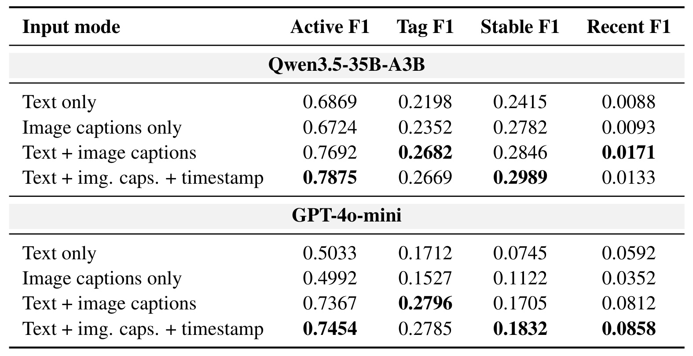
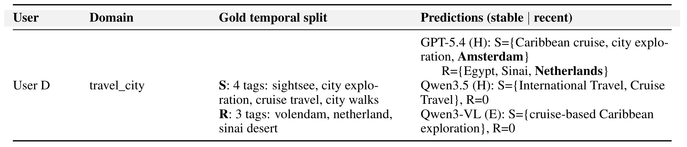

SocialPersona: Benchmarking Personalized Profiling and Response with Multimodal Social-Media Context 是哈工大 Qinkai Zhang、Yanyan Zhao、Xin Lu、Yulin Hu、Pengtao Han、Bing Qin 在 2026-06-25 提交到 arXiv 的个性化多模态评测论文，论文入口为 arXiv:2606.26654。它不是再做一个“对话里记住用户说过什么”的记忆题，而是把用户在社交媒体上长期留下的文字、图片、时间戳组织成画像证据，测试多模态大模型能否从这些自然行为里恢复稳定兴趣和近期兴趣，并在后续回复里真正使用这些画像。论文脚注给出匿名 4open.science 项目入口；本 worker 访问时跳转到 API 后返回 HTTP 401，因此代码/完整数据入口按“论文提示存在，但可用性未核验”处理。
现有个性化助手评测多半在问模型能不能记住用户在对话中显式说出的偏好，但更完整的个性化需要模型从用户自然留下的多模态轨迹中推断真正关心的内容。社交媒体时间线里的证据往往分散、嘈杂、跨帖子、跨模态、带时间结构，模型不仅要恢复稳定兴趣，还要识别最近才出现的兴趣，并把这些推断用于后续互动。
1. 背景和问题
1.1 从“记住说过的话”到“推断自然留下的偏好”
这篇论文的问题意识很清楚：个性化助手越来越需要理解用户长期兴趣、近期活动和隐式偏好，但主流基准通常把用户上下文简化成对话历史、结构化行为日志或短文本记忆。这样的设置更像是在考“用户已经告诉我什么”，而不是考“用户没有明说，但行为留下了什么线索”。对真实推荐、内容理解和个人助手来说，后者反而更接近线上系统每天面对的材料：用户发过什么图、反复聊过什么话题、最近集中出现了哪些活动、哪些兴趣只是偶然提到而不是稳定偏好。
SocialPersona 把这个差异转成一个可评测任务：给模型一个普通用户的纵向社交媒体时间线，让模型从文本、图像 caption 和时间戳中构造结构化用户画像，再用画像生成个性化回复。论文特别强调 revealed preferences，也就是从行为痕迹中显露的偏好，而不是用户在对话中声明的偏好。这个设定对推荐系统很自然：召回和排序长期依赖点击、观看、搜索、收藏、停留等间接信号；但在大模型助手语境里，许多评测仍然停留在“记忆事实”层面，缺少对弱证据、跨帖子聚合和时间变化的系统测量。

Figure 1 把论文的任务压缩成三段链路。第一段是社交媒体上下文：用户在不同日期留下散落帖子，例如晨间步道、老街摄影、露营炉测试。第二段是模型应当推断出的画像：有些兴趣是稳定的，如户外探索、安静步道行走；有些兴趣是近期的，如露营装备和短周末露营计划。第三段才是个性化回复：当用户问周末做什么时，回复不应只给通用建议，而应把近期露营兴趣和稳定户外兴趣结合起来。这里的难点不是图中某个单独帖子，而是多个帖子共同形成证据；模型要判断哪些信息是兴趣、哪些是一次性场景、哪些最近才出现、哪些能安全用于回复。对推荐系统来说，这对应长期兴趣与短期兴趣融合；对个人助手来说，这对应把外部行为记忆转成可控、可解释的交互上下文。
1.2 SocialPersona 补上的评测空位
论文把 SocialPersona 和已有基准放在同一张表里比较，核心差异不是“多了图片”这么简单，而是同时满足五个条件：上下文来自用户社交时间线，输入是多模态，数据来自真实用户行为，偏好来自行为证据，且同时评测画像构造和对话生成。许多已有基准只覆盖其中一部分。例如 LaMP 更偏文本历史；PrefEval 更偏对话生成；PersonaMem 虽然讨论用户记忆，但不是来自真实纵向社交媒体行为；Mem-PAL 和电商/短视频类基准更接近行为日志，却缺少多模态真实社交时间线与对话应用的组合。

Table 1 的最后一行解释了论文为什么把自己定义成一个 benchmark 而不是单纯数据集。SocialPersona 同时在 Multi-modal、Real Data、Revealed Pref.、Profile Eval、Dialogue Eval 五列打勾，这意味着它不是只评模型“看懂图片没有”，也不是只评“是否能生成流畅回复”，而是把真实用户行为、画像恢复和对话使用绑在一起。这个组合会迫使模型暴露三个层面的能力缺口：第一，能不能把分散证据聚合成具体兴趣标签；第二，能不能区分长期稳定偏好和近期变化；第三，能不能把画像用于回复，而不是继续输出泛化建议。它对推荐系统的迁移价值也在这里：如果一个模型只能识别“这个用户喜欢户外”，却不能识别“最近在看露营装备”，那么它在推荐链路里只能提供粗粒度人群标签，难以支持精细化召回、重排或对话式探索。
1.3 为什么这件事比普通多模态理解更难
普通多模态社交媒体任务常常围绕单帖做情感、讽刺、谣言或有害内容识别；SocialPersona 要求模型把一个用户最多两年、最多 200 条帖子作为外部个性化上下文来理解。这里至少有四个额外难点。第一，兴趣信号弱且分散，一个城市探索兴趣可能只表现为几条短句和几张无明显地标的图片；第二，证据跨模态，一些兴趣靠文字说明，一些靠图像 caption，一些靠两者互补；第三，时间结构不可忽略，最近 90 天密集出现的主题和跨 18 个月反复出现的主题应进入不同桶；第四，画像还要服务下游对话，错误画像会直接改变回复方向。
这也是论文和推荐系统、个性化 RAG、长期记忆助手之间的接口。推荐系统里，用户画像经常被拆成长期兴趣、短期兴趣、场景兴趣和负反馈；大模型助手里，这些概念常被包装成 memory 或 profile，但评测往往不检查画像是否来自真实行为证据。SocialPersona 的价值在于把“画像是否可信”和“画像是否能用于回复”拆开评测，并保留证据链，让模型不能只靠生成能力掩盖画像错误。
2. 方法
2.1 从普通用户时间线到可审计画像
论文先定义每个用户的社交媒体时间线。对用户 u，时间线是按时间排序的帖子序列，每条帖子包含文本、视觉内容和时间戳：
符号解释：$S_u$ 表示用户 u 的完整观察窗口；$p_i$ 是第 i 条帖子；$x_i$ 是帖子文本，$v_i$ 是图片或视频封面等视觉内容，$\tau_i$ 是发布时间。这个定义看似简单，但它把 SocialPersona 和只用对话历史的 memory benchmark 区分开来：偏好不是单条文本中的显式声明，而是要在一串带时间顺序的多模态证据里恢复。
用户收集也服务于这个目标。作者从 8,000 个候选账号开始，使用粉丝数、粉丝/关注比和图像轨迹密度做自动过滤，保留 5 到 5,000 粉丝、FFR 在 [0.5, 2]、ITDR 不低于 0.3 的账号，再人工排除商业号、转发过多和低质量账号。这样做的目的不是追求社交媒体大 V，而是尽量保留普通长尾用户的自然表达。每个用户最多采集最近两年的 200 条帖子，记录时间戳、文本、标签、URL 和视觉内容；原文提到用户来自多个国家和语言，因此文本会统一翻译成英文以便构造和评测。最终 benchmark 保留 171 个用户，平均每人 176.81 条帖子和 130.38 张图片。
画像空间被限制在七个兴趣领域：sports_outdoor、entertainment、gaming、food_drink、travel_city_exploration、photography_creation、pets。每个活跃领域下再分 stable interests 和 recent interests，并保留 supporting evidence 以便审计。论文明确排除人口属性、身份、健康、政治等敏感或高风险推断，这一点很重要：它把 benchmark 定位在非敏感兴趣建模，而不是无限制用户画像挖掘。换句话说，SocialPersona 要测试的是“能否基于证据恢复兴趣”，不是鼓励模型做身份推断或隐私侵入。
2.2 LLM 辅助抽取、聚合、校准和人工复核
Gold profile 构造采用 LLM 辅助但人工把关的闭环。第一步，Gemini-3-Flash 对原始文本和视觉内容做保守 post-level extraction，只抽取可观察、由证据支撑的兴趣信号，并记录模态来源；提示词要求避免人口、身份、动机等推测。第二步，系统跨帖子聚合候选标签：近重复帖子降权，语义等价兴趣合并成规范标签，再为每个 user-domain pair 形成 evidence pack。第三步，系统根据重复调整后的支持度、时间分布、近期性和置信度初步划分 stable/recent。论文中 stable interests 要求跨时间线反复出现，recent interests 则更看重最近 90 天集中出现的证据。这套流程的核心机制不是让 LLM 直接决定用户是谁，而是让 LLM 提供候选、聚合和校准线索，再用证据包与人工复核约束标签粒度和时间桶。
第四步，Gemini-3.1-Pro 做 LLM calibration，检查 evidence pack、规范候选、分数和时间桶，重点找弱支持、过度泛化、投机标签和分桶错误。最后，训练标注员把每个 calibrated profile 对照原始支持帖子复核。论文报告五名标注员参与验证，分歧由额外 adjudicator 处理，总计约 350 标注小时；40 用户重叠子集上，标签接受的 Krippendorff's alpha 为 0.72，stable/recent 桶分配为 0.63。人工复核修改了约 12% 的 pipeline proposed tags，其中 8% 因证据不足被删，3% 被改得更具体，1% 是漏掉但有支持的兴趣。这个比例说明 LLM 可以做高效候选生成，但不能直接把输出当 gold。

Figure 2 展示了方法的两个半区。左侧是数据构造：候选用户经过自动过滤和人工筛选，帖子进入 post-level extraction，再经过 cross-post aggregation、normalizing/clustering、temporal profiling、LLM calibration 和 human verification，最后形成 gold profile。右侧是评测：profile inference 让 MLLM 从社交媒体时间线预测 profile，并用 activation F1 和 interest tag F1 等指标衡量；personalized dialogue 则在时间线和用户请求上生成回复，由 LLM judge 根据 interest coverage、concreteness、fluency 打分。这个图的关键是把“画像构造”和“画像使用”分开：如果模型画像错了，后续对话可能错；如果画像对但对话不用，也会在 coverage 和 concreteness 上被扣分。因此 SocialPersona 可以定位错误发生在画像阶段还是回复阶段。
2.3 两项任务、三种画像构造策略和指标
SocialPersona 支持两个任务。Profile construction 要求模型从社交媒体时间线预测七个领域下的 stable/recent interest tags。领域是否活跃用 active F1 衡量；兴趣标签先做 normalized exact match，再用 o3 语义匹配处理未匹配标签，一对一确定 true positives。Personalized dialogue generation 则要求模型根据时间线或模型生成画像回答用户请求，分为 stable-interest recommendation 和 recent-interest exploration 两种意图。论文使用 GPT-5.5 和 Qwen3.7-Max 作为 judges，评价 interest coverage、concreteness 和 fluency，并把均值作为 Avg：
符号解释：$\mathrm{Coverage}$ 衡量回复是否覆盖 gold profile 中相关兴趣，$\mathrm{Concreteness}$ 衡量建议是否具体可执行，$\mathrm{Fluency}$ 衡量语言质量，$\mathrm{Avg}$ 是三者无权平均。这个指标设计能避免一个常见假象：模型语言很流畅但没有真正使用用户兴趣时，Fluency 可能高，Coverage 和 Concreteness 仍会暴露问题。
画像构造实验有三种输入策略。Direct 直接把完整时间线一次性喂给模型；Hierarchical 把时间线切成 20 条帖子一块，先分别总结，再聚合 chunk summaries；Extractive-abstractive 先让模型按领域选择最多 K=12 条代表帖子，再基于这些证据合成画像。三者对应三种工程选择：Direct 保留最多证据但上下文负担大；Hierarchical 降低长上下文压力但可能在 chunk summary 中丢掉细节；Extractive-abstractive 更像检索后生成，能过滤噪声，却要求第一阶段选对证据。论文后面的结果表明，没有一种策略稳定解决所有问题，强模型可从分解中获益，弱模型可能在中间摘要或抽取阶段进一步丢证据。
3. 实验结果
3.1 画像构造：能激活领域，但难恢复细粒度标签
论文用固定 100 用户子集评测六个模型：Gemini-2.5-Flash、GPT-4o-mini、GPT-5.4、Qwen2.5-VL-7B-Instruct、Qwen3-VL-8B-Instruct、Qwen3.5-35B-A3B。F1 指标可以写成：
符号解释：$P$ 是 precision，$R$ 是 recall，$F1$ 是二者的调和平均。SocialPersona 把这个思想分别用在 active domain、interest tags、stable tags 和 recent tags 上，因此一个模型即使能判断领域活跃，也可能因为具体兴趣标签缺失而在 Interest F1 上偏低。

Table 2 的第一层结论是：模型往往能较好激活大领域，却难以恢复细粒度兴趣。Direct 设置下 Gemini-2.5-Flash 的 Active F1 达到 0.8663，但 Interest F1 只有 0.3288，Recent F1 只有 0.0219；GPT-5.4 在 Direct 下 Interest Precision 最高为 0.6038，但 Interest Recall 只有 0.2307，说明它偏保守，命中的兴趣较准但漏掉很多。Hierarchical 对强模型更有帮助，GPT-5.4 的 Interest F1 从 Direct 的 0.3338 提升到 0.4144，Recent F1 从 0.0687 提升到 0.1202；Qwen3-VL-8B 也从 0.2246 提升到 0.3219。这说明把长时间线拆成块再聚合可以缓解部分长上下文聚合问题，但不是通用解法：Gemini-2.5-Flash 在 Hierarchical 下 Interest F1 反而掉到 0.0791，说明中间摘要可能让保守模型进一步丢掉细节。
论文把这种现象称为 over-generalization：gold profiles 中每个活跃领域平均有 3.4 个标签，而模型平均只预测 1.5 个。模型喜欢输出“旅行”“音乐”“美食”这类宽泛标签，却很少稳定恢复“城市步行”“阿拉伯音乐”“生日蛋糕”“露营炉具”这类可指导下游推荐的具体兴趣。附录的 prompt analysis 还排除了一个可能解释：把保守提示词换成中性提示词后，Interest Recall 只小幅增加 0.023，Precision 反而下降 0.073，Interest F1 只涨 0.014。因此低 recall 不是单纯提示词限制，而是模型从行为痕迹恢复细粒度兴趣的能力缺口。
3.2 对话生成：画像既是记忆压缩，也是错误传播通道
第二项任务评测模型是否能把画像用于个性化回复。论文比较四类输入：直接使用原始 timeline；使用 Direct 构造的 profile；使用 Hierarchical 构造的 profile；使用 Extractive-abstractive 构造的 profile。表中每个设置都由 GPT-5.5 和 Qwen3.7 两个 judge 评分，维度是 Coverage、Concreteness、Fluency 和 Avg。

Table 3 的重点不是哪个模型平均分最高，而是 profile conditioning 的双刃剑性质。原始 timeline 给模型最多信息，但也带来噪声；profile 能把长上下文压缩成记忆表示，但如果画像稀疏或错误，回复会直接继承这个瓶颈。以 GPT-5.4 为例，Timeline 设置下 GPT-5.5 judge 的 Avg 为 3.5667；Direct profile-conditioned 下为 3.5500；Extractive-abstractive 下甚至略高到 3.6150。这说明强模型生成的 profile 可以作为可用中间表示。但对 Gemini-2.5-Flash，Timeline 设置 Avg 为 2.9633，Extractive-abstractive profile-conditioned 下降到 2.3300，说明画像压缩在弱模型上可能丢掉太多兴趣钩子。
另一个很重要的现象是 Fluency 相对稳定。多数模型的流畅度分数在不同设置中没有像 Coverage 那样大幅波动，这说明困难不在“写一句顺滑的话”，而在“回复是否触及正确兴趣，并给出具体建议”。论文的 profile-dialogue correlation 分析进一步支持这一点：16/18 个 Interest F1 与 Avg 的相关性为正，Interest F1 与 Coverage 的相关最强。这对工程系统有明确含义：如果用 MLLM profile 作为个性化 RAG 或推荐解释的中间层，profile 的细粒度召回会直接影响下游回复覆盖度；只优化生成模型的语言风格不能弥补画像漏检。
3.3 模态消融：文字是主信号，图片和时间提供补充但不解决细粒度
论文的输入模态消融选择 Qwen3.5-35B-A3B 和 GPT-4o-mini，在 text only、image captions only、text + image captions、text + image captions + timestamp 四种配置下比较。这个设计很适合回答一个问题：SocialPersona 的多模态价值到底来自图片，还是来自长时间线文本，还是来自时间戳？

Table 5 显示，文本仍是主要画像信号，但图像 caption 有明显互补价值。对 GPT-4o-mini，Text only 的 Active F1 为 0.5033，加入 image captions 后提升到 0.7367；Interest Tag F1 也从 0.1712 提升到 0.2796。对 Qwen3.5-35B-A3B，Text only Active F1 为 0.6869，Text + image captions 为 0.7692，加入 timestamp 后为 0.7875。时间戳更像帮助模型判断领域是否活跃，而不是解决具体标签恢复：Qwen3.5 加 timestamp 后 Tag F1 从 0.2682 略降到 0.2669，GPT-4o-mini 从 0.2796 略降到 0.2785。
这个结果和论文的错误分析相互印证。视觉显著的领域如 pets、gaming 更容易被激活，因为图片 caption 往往直接暴露“宠物照片”“游戏截图”等强信号；travel、entertainment、food_drink 等领域则经常由短文本、城市散步、餐馆名称、音乐片段等分散证据支持，模型容易把它们漏掉或折叠成宽泛类别。换到推荐系统语境，这意味着多模态用户建模不能只看“有没有图片特征”，还要看图片特征是否把注意力错误吸到视觉强信号上。一个用户最近频繁发天文摄影图片，模型可能因此在对话中反复推荐天文摄影活动，却忽略其文本中同样明确的餐饮或徒步兴趣。
3.4 错误模式：过度泛化、文本盲区和近期兴趣盲区
论文的错误分析可以归纳为三类。第一是过度泛化：模型把多个具体 gold tags 压成一两个安全宽泛标签。例如 food_drink 中 dining out、birthday cake、dessert、coffee、restaurant dining、casual dining、confectionery 可能被折成 sweets and desserts 与 restaurants and dining out。第二是文本分散证据漏检：city exploration、music habits、meals 等兴趣没有强视觉锚点，模型容易把整个领域判为 inactive。第三是 recent-interest blindness：模型即使能识别主题，也经常不知道哪些是最近才出现的兴趣。

Table 10 用 User D 的 travel_city 展示时间桶问题。Gold profile 把 sightsee、city exploration、cruise travel、city walks 标为稳定兴趣，把 Volendam、Netherlands、Sinai desert 标为近期兴趣。GPT-5.4 在 Hierarchical 设置下部分捕捉到 Egypt、Sinai、Netherlands 属于 recent，却又把 Amsterdam 放进 stable，和 Netherlands 的同一旅行线索发生矛盾。Qwen3.5 和 Qwen3-VL 更明显：它们把国际旅行、邮轮旅行或 Caribbean exploration 都放进 stable，recent 直接为 0。论文还指出，模型整体上会把 70%-90% 的预测分配给 stable bucket，不管证据在时间线上是否集中于近期。
这类失败对个性化系统特别致命，因为近期兴趣往往决定下一次推荐或对话的切入点。长期喜欢城市探索和最近刚去荷兰/西奈沙漠不是同一件事；前者适合泛化为旅行偏好，后者可能对应短期计划、近期回忆、相关内容推荐或 follow-up 问答。如果模型无法计算证据的时间分布，只是把所有旅行证据放进一个稳定主题，那么它会错过“最近正在发生什么”。这也解释了为什么 SocialPersona 的 Recent F1 普遍低：模型不是没有看到时间戳，而是没有稳定利用时间戳做跨帖子分布推理。
4. 总结
4.1 我的判断
SocialPersona 最有价值的地方，是把用户画像从“可写进 prompt 的静态偏好”重新拉回到“从真实行为证据中恢复的中间表示”。它提醒我们，个性化 LLM 的难点不只是记忆容量或上下文长度，而是证据聚合、标签粒度、时间分桶和下游使用之间的整条链路。对推荐系统来说，它提供了一种评测语言：不要只看模型能否说“用户喜欢旅行”，还要看它能否从分散帖子里恢复具体目的地、活动类型、近期变化和负例边界。对个性化 RAG 或助手系统来说，它说明 profile 既能压缩长上下文，也会传播错误；画像层如果太粗，下游再强的生成模型也只能输出宽泛建议。
我会把这篇论文看成一个“画像评测基准”而不是一个“新模型方法”。它没有提出复杂模型结构，也没有训练目标上的新 loss；贡献集中在任务定义、数据构造、评测协议和错误分析。这个定位反而更适合工程团队参考：如果要评估推荐画像、用户记忆或对话式推荐模型，SocialPersona 的 active domain、interest tag、stable/recent、dialogue coverage 这些维度可以拆成内部测试集；如果要上线个性化助手，也可以借鉴它的人审流程和敏感属性排除原则。
4.2 工程启发与复现建议
第一，画像构造要保留证据链。SocialPersona 的 gold profile 不只是标签列表，还保留 supporting evidence，方便检查某个兴趣来自哪些帖子、哪种模态和哪个时间段。在线系统也应避免只存“用户喜欢 X”这种无来源标签，否则很难判断标签过期、证据不足或被偶发内容污染。
第二，长期/近期兴趣不要只靠“最近窗口命中”粗暴划分。论文里的 stable/recent 分桶强调重复支持、时间分布和近期集中度。推荐系统如果已经有行为序列，可以把兴趣证据按时间桶、频次、去重支持度和场景强度拆开，再交给 LLM 总结，而不是让 LLM 自己在扁平文本里猜。
第三，评测要把画像质量和回复质量分开。一个模型可能画像 F1 很低但回复很流畅，也可能画像还可以但对话不使用画像。SocialPersona 的两阶段设置能定位错误来源，内部评测也应分别看 profile recall、profile precision、dialogue coverage、concreteness 和安全性。
第四，复现时要重点检查数据可访问性和隐私协议。论文只公开去标识化的 text-plus-caption 子集，原始图片因为再识别风险没有直接放出，完整 benchmark 需要受控研究访问。若要在公司内部复刻类似数据集，必须先定义哪些兴趣可以标注、哪些敏感属性必须排除、标注员如何复核、用户内容如何脱敏。
4.3 局限、风险和后续跟进
局限一：论文使用 image captions 而不是原始图片作为统一输入，这能规避不同 API 的视觉 token 和上传限制，但会丢失像素级细节，也可能把 caption 模型的偏差传给画像模型。局限二：用户来自社交媒体公开内容，虽然论文过滤了商业号和敏感属性，但样本规模只有 171 个用户，无法代表所有平台、语言和文化背景。局限三：gold profile 经过 LLM 辅助生成再由人审修订，仍可能受到初始抽取器和标签 taxonomy 的影响；七个兴趣领域之外的偏好不在评测范围内。局限四：LLM judge 虽有人类一致性验证，但 coverage 和 concreteness 仍有主观性，尤其当回复既相关又过度个性化时，评分边界可能不稳定。局限五：匿名项目入口本轮访问返回 HTTP 401，完整复现所需的代码、数据和受控访问流程仍需后续核验。
后续我会跟三条线。第一，等项目入口或正式仓库可用后，检查数据字段、评测脚本和脱敏子集，确认能否复现 Table 2 与 Table 3。第二，把 SocialPersona 和推荐系统里的长期/短期兴趣建模方法对齐，尤其看 stable/recent bucket 是否能和现有行为窗口、兴趣衰减、session intent 特征互相验证。第三，关注后续模型是否显式引入时间分布建模，例如先构建 per-domain evidence timeline，再让模型基于支持度和近期性输出画像；这比单纯把更长 timeline 塞进上下文更可能改善 Recent F1。第四，可以把该基准作为个性化 RAG 的压力测试：检验系统能否从用户外部行为中抽取可审计画像，再把画像用于检索重排、回复约束和反事实解释。